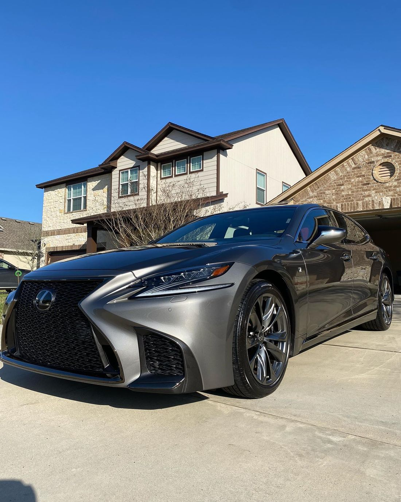

Showroom shine for your truck.Jeep.SUV.Lexus.daily driver.
Interior and exterior detailing, deep interior cleaning, engine bay detailing and ceramic finish in Victoria, Texas. Let me help you shine, as the logo says, with updates from start to finish.
5.073 Google reviews“Alaniz is the real deal!”Detailing for trucks, SUVs and everyday cars.
From a work truck that hasn’t been clean in years to a Lexus that needs a ceramic finish. Under each service, you’ll read what a real customer wrote.
Full Vehicle Detailing
Interior and exterior detailing for trucks, SUVs, Jeeps and cars, finished so the vehicle looks the way it did when it left the lot.
Learn more“Went to pick it up and it was immaculate.”
Clayton Stephenso · Google review
Ceramic Finish
A ceramic finish on your paint for deep gloss. Prep takes time and care, and you’re kept up to date while it’s done.
Learn more“Prepping and installing the ceramic takes time and knowledge and they can do it right!”
Ted Thomas · Google review
Interior Deep Clean
Seats, carpets and cabins brought back from stains, odors and even mildew, with updates along the way.
Learn more“It looked fresh out the factory.”
matt · Google review
Engine Bay Detailing
A dirty engine bay cleaned up fast, so it’s tidy under the hood as well as outside.
Learn more“A few hours later I got myself a sparkling clean engine!”
Simon Streminsky · Google review
Truck & SUV Detailing
Work trucks, family SUVs and Jeeps cleaned thoroughly, including the ones that haven’t seen a detailer in a long time.
Learn more“Alaniz is the real deal!”
matt · Google review
Exterior Wash & Shine
A careful exterior detail for spotless paint, glass and wheels, so the shine you forgot about comes back.
Learn more“I had forgotten how pretty and shiny the exterior could.”
Clayton Stephenso · Google review
Four steps. One fresh vehicle.
- 01
Call or text
Tell us what your vehicle needs and send a few photos. Photos help us quote accurately.
- 02
Get your price & time
Pricing depends on the vehicle and its condition. You get a free, no-obligation quote and a time that fits your week.
- 03
We detail it
Interior, exterior, engine bay or ceramic. Customers say they’re kept up to date while the work is done.
- 04
Drive away shining
We confirm the details with you directly, and never treat a request as a booking until we’ve spoken.

A real job, photo from the Alaniz Detailing Google listing
The detailer Victoria recommends.
Alaniz Detailing is run by Marcos, as customers call him in their reviews. The same things come up again and again:
Communication you can count on
“He had great communication and always contacted us in advance so we could plan ahead of time.”
Meticulous craftsmanship
“He’s meticulous and takes his craftsmanship seriously.”
Transparent, fair pricing
“Transparent, and fair with his service packages,” says one review. “Absolutely worth every penny,” says another.
Customers come back
“Definitely a return customer.” “I will continue to use him and recommend him over and over!”
Real vehicles, real results.
Photos from the Alaniz Detailing Google listing. There are no stock photos in this gallery.
Victoria drivers say it best.
“Fresh out the factory,” “immaculate,” “like it just rolled off the showroom floor.” Here’s what customers wrote, word for word.
Amazing Job! We just bought a used Tacoma that was previously a pest control truck. It had some pretty bad stains on the seat, a really strange odor, and we even found mildew in the carpet. When we got it back from Alaniz me and my wife were blown away, It looked fresh out the factory. And the process couldn't have been smoother, He had great communication and always contacted us in advance so we could plan ahead of time. I couldn't be happier with his service Alaniz is the real deal!
Enlisted the skills of Marcos to detail my truck, for a trip out of state. It’s typically a work truck and I honestly don’t know when I last had it clean, especially the interior. Went to pick it up and it was immaculate. Interior looked like it had been, when I drove it off the lot, and I had forgotten how pretty and shiny the exterior could. Couldn’t be happier with his work. Absolutely worth every penny.
I just thought our 2018 Lexus LS500 looked good! When the team at Alaniz Detail in Victoria, Texas put the ceramic finish and then fine tuned the interior it was like it just rolled off the showroom floor! They pay attention to the details and keep the customer up to date on how the work was progressing. Prepping and installing the ceramic takes time and knowledge and they can do it right!
My SUV engine was very dirty and needed an engine bay detailing. I found Alaniz Detailing online. A few hours later I got myself a sparkling clean engine! Marcus worked fast and efficiently. He did such a professional job that I will come back for all my car detailing needs.
Marcos is very professional, transparent, and fair with his service packages. He’s meticulous and takes his craftsmanship seriously; that’s something I can truly appreciate! He’s done a couple of our vehicles and is well recommended!
I LOVE ALANIZ DETAILING! He's extremely professional and timely with his services and has repeatedly come for my vehicle and dropped it off looking like she just came off the lot. I will continue to use him and recommend him over and over! SOLID WORK, I hope God continues to bless him with abundance and prosperity.
They did an awesome job! And their communication was great and very enthusiastic and positive throughout the process, they gave me updates on the vehicle and were very accommodating to time and schedule, would definitely recommend!!! Did a great job and were very easy to work with!!!
Very Professional and Accommodating. Did an Excellent Job with detailing of my Jeep! Would highly recommend! My jeep looks amazing! Thanks a bunch you guys!!
Super happy with the detailing of my car. It was super filthy and Alaniz Detailing did an amazing job. Thank you!
Marcos is wonderful, knowledgeable and a hard worker. Highly recommended. Definitely a return customer
Selection of verbatim Google reviews. Rating, review count and star breakdown as shown on Google, November 2026.
Based in Victoria, Texas.
Alaniz Detailing is in Victoria, TX. The exact address isn’t listed on Google, so call or text and we’ll confirm where and when to bring or meet your vehicle.
- Victoria, TX
- Monday8 AM – 7 PM
- Tuesday8 AM – 7 PM
- Wednesday8 AM – 7 PM
- Thursday8 AM – 7 PM
- Friday8 AM – 7 PM
- SaturdayClosed
- SundayClosed
Good to know before you book.
Still have a question? Call or text (361) 649-9815. We’re open Monday to Friday.
Where are you located?
Alaniz Detailing is in Victoria, Texas. The exact address isn’t published on Google, so call or text (361) 649-9815 and we’ll confirm where and when to bring or meet your vehicle.
How much does it cost?
There’s no published price list, because the price depends on your vehicle, its size and its condition. Quotes are free and there’s no obligation. Text or call (361) 649-9815 with what you need done (photos help) and you’ll have a price before any work starts. One reviewer called the owner “transparent, and fair with his service packages.”
What services do you offer?
Interior and exterior detailing for trucks, SUVs, Jeeps and cars, interior deep cleaning, engine bay detailing, exterior wash and shine, and ceramic finish. Ask us if you’re not sure your vehicle or request fits.
Do you do ceramic coating?
Yes. A customer describes the team putting a ceramic finish on a Lexus LS500 and fine-tuning the interior. Ceramic prep takes time and care, so ask for a quote and a timeline.
Can you fix a really dirty or smelly interior?
Customers say so. One review describes a used truck with bad seat stains, a strange odor and mildew in the carpet that came back looking “fresh out the factory.” We’ll tell you honestly what to expect before we start.
Will I be kept updated while you work?
Reviewers regularly mention good communication, updates on the vehicle while it’s being detailed, and being contacted in advance so they could plan ahead.
What are your hours?
Monday to Friday, 8 AM to 7 PM. Closed Saturday and Sunday, as listed on Google.
How do I book?
Call or text (361) 649-9815, or send the quote form on the Contact page, which prepares a text message to our phone. A request isn’t a confirmed booking until we’ve spoken and agreed a time.
Ready to let us help you shine?
Call or text what your vehicle needs. We’ll confirm a price and a time, and keep you posted while the work is done.
(361) 649-9815Based in Victoria, Texas. Call or text to confirm location and timing.